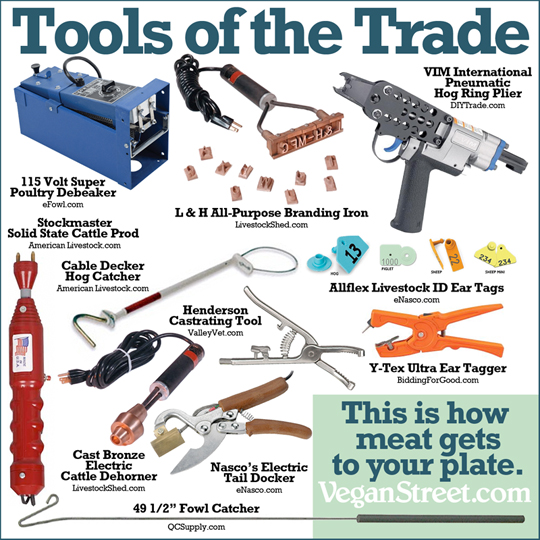
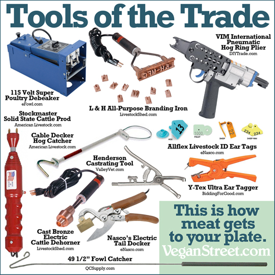
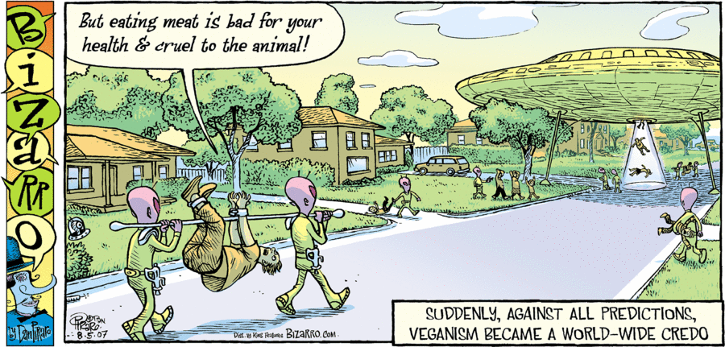
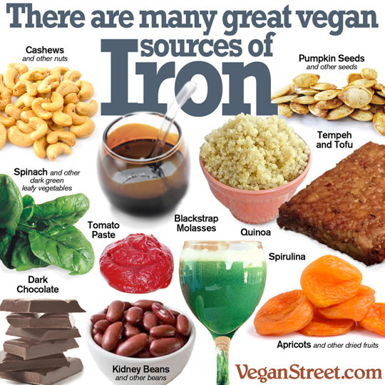
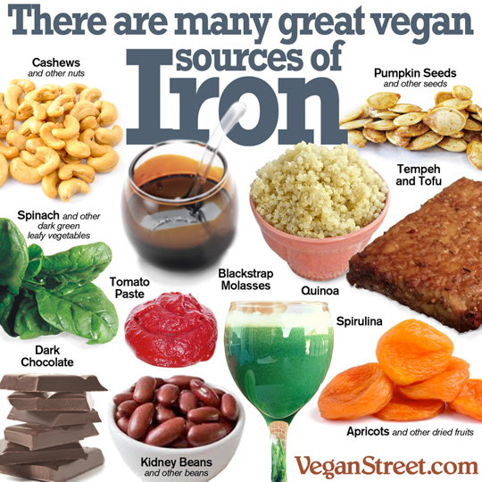
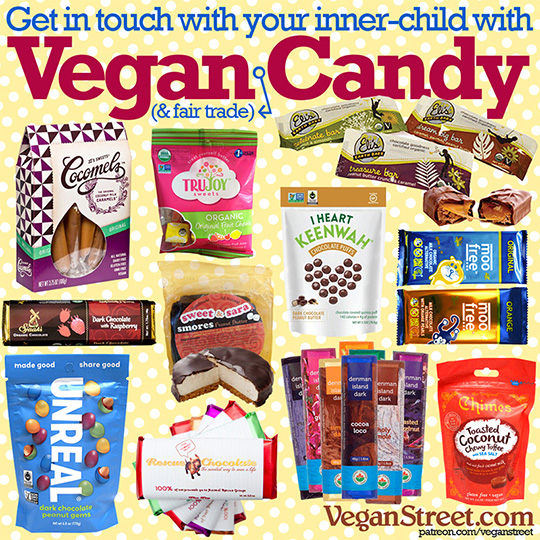

Vegan: Healthy, Sustainable, Compassionate Living
Healthy, Sustainable, and Compassionate living is best achieved by being Vegan since it reverses top diseases while sparing animals and saving our planet too!

To share this page with others, you can use is.gd/oyadad as a permanent link. Also, see my cloud storage at is.gd/cahiwi for even more educational materials.
Introduction

A year and a half ago, I learned that virtually all meat, dairy, and eggs come from nightmarish concentration camps of suffering known as Factory Farms, which are a far cry from the mythical Old MacDonald’s Farm we were taught as children.
“No matter how far you go down the wrong road, always turn back.” — Turkish proverb
It was a tsunami of visceral revulsion and karmic overload to witness the inhuman suffering enacted incessantly by animal agriculture on our behalf. By what perversion did this become the status quo?! Justly appalled, I went Vegan overnight and my family soon joined as I shared my newfound knowledge with them.
“Veganism is a way of living which seeks to exclude, as far as is possible and practicable, all forms of exploitation of, and cruelty to, animals for food, clothing or any other purpose.” — Definition
However, neither the ethical merits nor the environmental benefits of being Vegan were able to sway most other people enough to even consider the issues at hand, let alone to be Vegan themselves. Some showed interest, but hesitated over unfounded worries of inadequate nutrition damaging their current health because they believed that only meat and dairy could provide their essential nutrients.

What I needed was an authoritative, scientific body of evidence to dispel their fears and draw interest from even those who ask “What’s in it for me?”. Luckily this year, I found just what the doctor ordered: evidence-based medical and nutritional justification for every man, woman, and child to become Vegan!
So here I am, writing this article in order to spread awareness about this non-obvious and empowering knowledge so that we may all change for the better. My only regret is not knowing sooner: alas, we were blindfolded, but nevermore!
“You assist an evil system most effectively by obeying its orders and decrees. An evil system never deserves such allegiance. Allegiance to it means partaking of the evil. A good person will resist an evil system with his or her whole soul.” — Mahatma Gandhi

Thanks for your open-minded attention and thoughtful consideration on behalf of your future self, our fellow sentient beings, and our one and only planet Earth.
What is Vegan?
“Veganism is a way of living which seeks to exclude, as far as is possible and practicable, all forms of exploitation of, and cruelty to, animals for food, clothing or any other purpose.” — Definition


Why be Vegan?
Philip Wollen eloquently introduces the major issues surrounding animal agriculture in a debate (which his team won, with 73.6% votes in favor!) about removing animal products from restaurant menus in Melbourne, Australia in 2012:

Emily Moran Barwick introduces the ethical, environmental, and health consequences of animal product creation & consumption, with sources cited here:
See also this news article in The Huffington Post for an excellent introduction.
Healthy living
By doctor’s orders
The largest U.S. healthcare organization, Kaiser Permanente, officially recommends a whole-food plant-based diet to all their patients and doctors too:
- Official 2013 booklet on “The Plant-Based Diet: A Healthier Way To Eat”
- Official 2015 booklet on “Healthy Living: Eat Healthy, Live Better”
- Booklets & factsheets on “Health & Nutrition” by the Physicians Committee
What Diet Should Physicians Recommend? — Kaiser Permanente, the largest U.S. managed care organization, publishes patient education materials to help make plant-based diets the “new normal” for patients and physicians.
Today’s unhealthy food habits are socially accepted just like cigarette smoking was back in the 1950’s! So just don’t wait until your doctor “kicks the habit”:
Don’t Wait Until Your Doctor Kicks the Habit — Just like most doctors smoked in the 1950s, most physicians today continue to consume foods that are contributing to our epidemics of dietary disease.
To fight diseases
Dr. Michael Greger explains that you can prevent, treat, and even reverse our topmost killer diseases by eating a whole-food plant-based vegan diet as discussed in both his NYT best-selling book and associated lectures on Uprooting the Leading Causes of Death as well as How Not To Die, with sources cited here:
Uprooting the Leading Causes of Death — Death in America is largely a foodborne illness. Focusing on studies published just over the last year in peer-reviewed scientific medical journals, Dr. Greger offers practical advice on how best to feed ourselves and our families to prevent, treat, and even reverse many of the top 15 killers in the United States.
HOW NOT TO DIE: The Role of Diet in Preventing, Arresting, & Reversing Our Top 15 Killers — In this “best-of” compilation of his last four year-in-review presentations, Dr. Greger explains what we can do about the #1 cause of death and disability: our diet.
| Rank | Cause of Death | Preventable? | Treatable? | Reversible? |
|---|---|---|---|---|
| 1 | Heart diseases | Yes | Yes | Yes |
| 2 | Cancer (malignant neoplasms) | Yes | Yes | Yes |
| 3 | Lung (chronic lower respiratory) diseases | Yes | Yes | Yes |
| 4 | Stroke (cerebrovascular diseases) | Yes | ||
| 5 | Accidents (unintentional injuries) | |||
| 6 | Doctors (prescription side-effects) | Yes | ||
| 7 | Alzheimer’s disease | Yes | Yes | |
| 8 | Diabetes | Yes | Yes | Yes |
| 9 | Kidney failure (nephritis and nephrotic syndrome) | Yes | Yes | |
| 10 | Influenza and pneumonia | Yes | ||
| 11 | Suicide (intentional self-harm) | Yes | Yes | |
| 12 | Blood infection (septicemia) | Yes | ||
| 13 | Chronic liver disease and cirrhosis | Yes | Yes | |
| 14 | High blood pressure (essential hypertension) | Yes | Yes | Yes |
| 15 | Parkinson’s disease | Yes | ||
| 16 | Lung tissue inflammation (pneumonitis) | Yes |
Heart disease
How Not to Die from Heart Disease — Lifestyle approaches aren’t just safer and cheaper. They can work better, because you’re treating the actual cause of the disease.
Making Heart Attacks History: Dr. Caldwell Esselstyn at TEDxCambridge 2011
Paul Chatlin: eating plant-based saved him from surgery (former meat lover heals heart with plant-based diet in the H.O.P.E. Project.
Cholesterol & Lower Back Pain — High cholesterol can lead to atherosclerosis in the vertebral arteries that nourish our spine, and result in disc degeneration and lower back pain—a leading cause of disability.
Back in Circulation: Sciatica & Cholesterol — Atherosclerotic plaque clogging the arteries feeding our spine may lead to low back pain, disc degeneration, and sciatic nerve irritation.
Survival of the Firmest: Erectile Dysfunction & Death — Because penile arteries are only about half the size of the coronary arteries in the heart, erectile dysfunction can be a powerful predictor of cardiac events—such as sudden death.
Cancer
The Physicians Committee’s Food Choices for Cancer Prevention and Survival
Nutrition Facts survey of actionable findings from Breast Cancer research
Nutrition Facts summary of actionable findings from general Cancer research
How Not to Die from Cancer — What happens when you put cancer on a plant-based diet?
Which Dietary Factors Affect Breast Cancer Most? — American Institute for Cancer Research recommendation compliance associated not only with cancer prevention and survival but less heart and respiratory disease mortality and a longer lifespan.
The Best Advice on Diet and Cancer — What the best available balance of evidence says right now about what to eat and avoid to reduce your risk of cancer.
D Anthony Evans: a cancer patient given 6 months to live becomes a Cancer Thriver who defies his prognosis, in the H.O.P.E. Project.
Diabetes
Plant-Based Diets Recognized by Diabetes Associations — Plant-based diets as the single most important, yet underutilized, opportunity to reverse the pending obesity and diabetes-induced epidemic of disease and death.
What Causes Insulin Resistance? — Prediabetes and type 2 diabetes are caused by a drop in insulin sensitivity blamed on “intramyocellular lipid,” the buildup of fat inside our muscle cells.
Tackling diabetes with a bold new dietary approach: Dr. Neal Barnard at TEDxFremont 2012
How Not to Die from Diabetes — Type 2 diabetes can be prevented, arrested, and even reversed with a healthy enough diet.
Marc Ramirez: reversed Diabetes and Erectile Dysfunction with diet while saving thousands of dollars eating this way, in the H.O.P.E. Project.
Go Vegan! explains how nutrition affects diabetes, with sources cited below:

IDF - 2015 Diabetes Atla.
Ley, S. H., et al. (2014). Prevention and management of type 2 diabetes: dietary components and nutritional strategies. Lancet 383(9933): 1999-2007.
Davis, Brenda (2008). Defeating Diabetes: Lessons From the Marshall Islands. Today’s Dietitian. Vol. 10 No. 8 P. 24
Chiu, T. H., et al. (2014). Taiwanese vegetarians and omnivores: dietary composition, prevalence of diabetes and IFG. PLoS One 9(2): e88547.
Tonstad, S., et al. (2013). Vegetarian diets and incidence of diabetes in the Adventist Health Study-2. Nutr Metab Cardiovasc Dis 23(4): 292-299.
Barnard, N. D., et al. (2006). A low-fat vegan diet improves glycemic control and cardiovascular risk factors in a randomized clinical trial in individuals with type 2 diabetes. Diabetes Care 29(8): 1777-1783.
Ornish, D., et al. (1990). Can lifestyle changes reverse coronary heart disease? The Lifestyle Heart Trial. Lancet 336(8708): 129-133.
Kahleova, H. and T. Pelikanova (2015). Vegetarian Diets in the Prevention and Treatment of Type 2 Diabetes. J Am Coll Nutr 34(5): 448-458.
Kidney disease
How Not to Die from Kidney Disease — What are the three significant dietary risk factors for declining kidney function?
High blood pressure
How Not to Die from High Blood Pressure — How to prevent and reverse hypertension, the #1 risk factor for death in the world.
To boost nutrition

The Academy of Nutrition and Dietetics, who are the world’s largest organization of food and nutrition professionals, published their official position on this matter in Volume 116, Issue 12, Pages 1970-1980 (December 2016), stating that:
“It is the position of the Academy of Nutrition and Dietetics that appropriately planned vegetarian, including vegan, diets are healthful, nutritionally adequate and may provide health benefits for the prevention and treatment of certain diseases. These diets are appropriate for all stages of the life cycle, including pregnancy, lactation, infancy, childhood, adolescence, older adulthood and for athletes. Vegans need reliable sources of vitamin B-12, such as fortified foods or supplements.”
Regarding their Vitamin B-12 statement: you only need a single 2500mcg vitamin B-12 supplement once per week, which can cost as little as $2 per year!
The Great Protein Fiasco — The field of nutrition got human protein requirements spectacularly wrong, leading to a massive recalculation.
The Food Industry Wants the Public Confused About Nutrition — The “Fairness Doctrine” example shows to what extent the purveyors of unhealthy products will go to keep the truth from the American public.

Don’t we need meat?
Harvard’s Meat & Mortality Studies — The Harvard Health Professionals Follow-up Study and the Harvard Nurses’ Health Study concluded that red meat consumption was associated with living a significantly shorter life—increased cancer mortality, increased heart disease mortality, and increased overall mortality.
Carnitine, Choline, Cancer, & Cholesterol: The TMAO Connection — The New England Journal of Medicine shows that choline in eggs, poultry, dairy, and fish produces the same toxic TMAO as carnitine in red meat—which may help explain plant-based protection from heart disease and prostate cancer.
Go Vegan! illuminates the health risks of eating meat, with sources cited below:

103年國人死因統計結果。台灣衛生福利部。 http://www.mohw.gov.tw/news/531349778
Huang T, Yang B, Zheng J, Li G, Wahlqvist ML, Li D. Cardiovascular disease mortality and cancer incidence in vegetarians: a meta-analysis and systematic review. Ann Nutr Metab. 2012;60(4):233-40. doi: 10.1159/000337301. Epub 2012 Jun 1. Review. PubMed PMID: 22677895. https://doi.org/10.1159/000337301
Ma X, Park Y, Mayne ST, Wang R, Sinha R, Hollenbeck AR, Schatzkin A, Cross AJ. Diet, lifestyle, and acute myeloid leukemia in the NIH-AARP cohort. Am J Epidemiol. 2010 Feb 1;171(3):312-22.
Cho E, Spiegelman D, Hunter DJ, Chen WY, Stampfer MJ, Colditz GA, Willett WC. Premenopausal fat intake and risk of breast cancer. J Natl Cancer Inst. 2003 Jul 16;95(14):1079-85.
Otsuki M, Tashiro M. 4. Chronic pancreatitis and pancreatic cancer, lifestyle-related diseases. Intern Med. 2007;46(2):109-13. Epub 2007 Jan 15. Review.
Bouvard V, Loomis D, Guyton KZ, Grosse Y, Ghissassi FE, Benbrahim-Tallaa L, Guha N, Mattock H, Straif K; International Agency for Research on Cancer Monograph Working Group. Carcinogenicity of consumption of red and processed meat. Lancet Oncol. 2015 Dec;16(16):1599-600.
Pan A, Sun Q, Bernstein AM, Schulze MB, Manson JE, Stampfer MJ, Willett WC, Hu FB. Red meat consumption and mortality: results from 2 prospective cohort studies. Arch Intern Med. 2012 Apr 9;172(7):555-63.
Appleby PN, Thorogood M, Mann JI, Key TJ. The Oxford Vegetarian Study: an overview. Am J Clin Nutr. 1999 Sep;70(3 Suppl):525S-531S. PubMed PMID: 10479226.
Thompson IM, Tangen CM, Goodman PJ, Probstfield JL, Moinpour CM, Coltman CA. Erectile dysfunction and subsequent cardiovascular disease. JAMA. 2005 Dec 21;294(23):2996-3002.
Don’t we need milk?
See what these Olympic athletes have to say in response to this common question:

Dairy consumption causes acne, allergies, colic, and constipation as well as serious issues like prostate cancer, type-1 diabetes, infertility, and more.
Is Milk Good for Our Bones? — The galactose in milk may explain why milk consumption is associated with significantly higher risk of hip fractures, cancer, and premature death.
Dairy Estrogen & Male Fertility — Sex steroid hormones in meat, eggs, and dairy may help explain the link between saturated fat intake and declining sperm counts.
Dr. Neal Barnard presents The Cheese Trap: How breaking a surprising addiction can revolutionize your health.
Go Vegan! explains that humans don’t need cow’s milk, with sources cited below:

Michaëlsson K, Wolk A, Langenskiöld S, Basu S, Warensjö Lemming E, Melhus H, Byberg L. Milk intake and risk of mortality and fractures in women and men: cohort studies. BMJ. 2014 Oct 28;349:g6015.
Feskanich D, Bischoff-Ferrari HA, Frazier AL, Willett WC. Milk consumption during teenage years and risk of hip fractures in older adults. JAMA Pediatr. 2014 Jan;168(1):54-60. doi: 10.1001/jamapediatrics.2013.3821. https://doi.org/10.1001/jamapediatrics.2013.3821
Bolland MJ, Leung W, Tai V, Bastin S, Gamble GD, Grey A, Reid IR. Calcium intake and risk of fracture: systematic review. BMJ. 2015 Sep 29;351:h4580. doi:10.1136/bmj.h4580. Review. https://doi.org/10.1136/bmj.h4580
Bischoff-Ferrari HA, Dawson-Hughes B, Baron JA, Kanis JA, Orav EJ, Staehelin HB, Kiel DP, Burckhardt P, Henschkowski J, Spiegelman D, Li R, Wong JB, Feskanich D, Willett WC. Milk intake and risk of hip fracture in men and women: a meta-analysis of prospective cohort studies. J Bone Miner Res. 2011 Apr;26(4):833-9.
Hao L, Huang H, Gao J, Marshall C, Chen Y, Xiao M. The influence of gender, age and treatment time on brain oxidative stress and memory impairment induced by d-galactose in mice. Neurosci Lett 2014;571C:45-9.
Cui X, Wang L, Zuo P, Han Z, Fang Z, Li W, et al. D-galactose caused life shortening in Drosophila melanogaster and Musca domestica is associated with oxidative stress. Biogerontology 2004;5:317-25.
Cao Y, Nimptsch K, Shui IM, Platz EA, Wu K, Pollak MN, Kenfield SA, Stampfer MJ, Giovannucci EL. Prediagnostic plasma IGFBP-1, IGF-1 and risk of prostate cancer. Int J Cancer. 2015 May 15;136(10):2418-26. doi: 10.1002/ijc.29295. Epub 2014 Nov 10. https://doi.org/10.1002/ijc.29295
Ma J, Giovannucci E, Pollak M, Chan JM, Gaziano JM, Willett WC, Stampfer MJ. Milk intake, circulating levels of insulin-like growth factor-I, and risk of colorectal cancer in men. J Natl Cancer Inst 2001; 93:1330–6.
Qin LQ, He K, Xu JY. Milk consumption and circulating insulin-like growth factor-I level: a systematic literature review. Int J Food Sci Nutr 2009;60(Suppl 7):330–40.
Allen NE, Appleby PN, Davey GK, Key TJ. Hormones and diet: low insulin-like growth factor-I but normal bioavailable androgens in vegan men. Br J Cancer 2000;83:95–7.
Aune D, Navarro Rosenblatt DA, Chan DS, Vieira AR, Vieira R, Greenwood DC, Vatten LJ, Norat T. Dairy products, calcium, and prostate cancer risk: a systematic review and meta-analysis of cohort studies. Am J Clin Nutr. 2015 Jan;101(1):87-117.
Andiran F, Dayi S, Mete E. Cows milk consumption in constipation and anal fissure in infants and young children. J Paediatr Child Health. 2003 Jul;39(5):329-31.
Irastorza I, Ibañez B, Delgado-Sanzonetti L, Maruri N, Vitoria JC. Cow’s-milk-free diet as a therapeutic option in childhood chronic constipation. J Pediatr Gastroenterol Nutr. 2010 Aug;51(2):171-6.
Carroccio A, Mansueto P, Morfino G, D'Alcamo A, Di Paola V, Iacono G, Soresi M, Scerrino G, Maresi E, Gulotta G, Rini G, Bonventre S. Oligo-antigenic diet in the treatment of chronic anal fissures. Evidence for a relationship between food hypersensitivity and anal fissures. Am J Gastroenterol. 2013 May;108(5):825-32.
Dehghani SM, Ahmadpour B, Haghighat M, Kashef S, Imanieh MH, Soleimani M. The Role of Cow’s Milk Allergy in Pediatric Chronic Constipation: A Randomized Clinical Trial. Iran J Pediatr. 2012 Dec;22(4):468-74.
Melnik BC. Evidence for acne-promoting effects of milk and other insulinotropic dairy products. Nestle Nutr Workshop Ser Pediatr Program. 2011;67:131-45.
Weaver CM, Plawecki KL. Dietary calcium: adequacy of a vegetarian diet. Am J Clin Nutr. 1994 May;59(5 Suppl):1238S-1241S. Review.
Weaver CM, Proulx WR, Heaney R. Choices for achieving adequate dietary calcium with a vegetarian diet. Am J Clin Nutr. 1999 Sep;70(3 Suppl):543S-548S. Review.
Food and Agriculture Organization of the United Nations: Climate Emissions http://www.fao.org/agriculture/lead/themes0/climate/emissions/en/
Don’t we need eggs?
Eggs vs. Cigarettes in Atherosclerosis — A similar exponential increase in carotid artery plaque buildup was found for smokers and egg eaters.
Who Says Eggs Aren’t Healthy or Safe? — Freedom of Information Act documents reveal that the U.S. Department of Agriculture warned the egg industry that saying eggs are nutritious or safe may violate rules against false and misleading advertising.
Don’t we need fish?
Is Fish Oil Just Snake Oil? — Advice to eat oily fish, or take fish oil, to lower risk of heart disease, stroke, or mortality is no longer supported by the balance of available evidence.
How Long to Detox from Fish before Pregnancy? — How many months does it take to clear 99% of the mercury and other industrial toxins from one’s body, and what role might our fat stores play in holding on to fat-soluble pollutants?
Dioxins in U.S. Farm-Raised Catfish — Feed contaminated with toxic pollutants thought to originate from sewer sludge fed to chickens and fish results in human dioxin exposure through poultry, eggs, and catfish.
Won’t we lose protein?
Go Vegan! explains that plants give you protein too, with sources cited below:

Dietary Reference Intakes (DRIs): Macronutrients http://nationalacademies.org/hmd/activities/nutrition/drimacronutrients.aspx
Messina V. Nutritional and health benefits of dried beans. Am J Clin Nutr. 2014 Jul;100 Suppl 1:437S-42S. doi: 10.3945/ajcn.113.071472. Epub 2014 May 28. https://doi.org/10.3945/ajcn.113.071472
Teng GG, Pan A, Yuan JM, Koh WP. Food Sources of Protein and Risk of Incident Gout in the Singapore Chinese Health Study. Arthritis Rheumatol. 2015 Jul;67(7):1933-42. doi: 10.1002/art.39115. https://doi.org/10.1002/art.39115
Choi HK, Atkinson K, Karlson EW, Willett W, Curhan G. Purine-rich foods, dairy and protein intake, and the risk of gout in men. N Engl J Med. 2004 Mar 11;350(11):1093-103.
Messina M, Messina VL, Chan P. Soyfoods, hyperuricemia and gout: a review of the epidemiologic and clinical data. Asia Pac J Clin Nutr. 2011;20(3):347-58. Review.
Yamakita J, Yamamoto T, Moriwaki Y, Takahashi S, Tsutsumi Z, Higashino K. Effect of Tofu (bean curd) ingestion and on uric acid metabolism in healthy and gouty subjects. Adv Exp Med Biol. 1998;431:839-42.
Caan BJ, Natarajan L, Parker B et al. (2011) Soy food consumption and breast cancer prognosis. Cancer epidemiology, biomarkers & prevention: a publication of the American Association for Cancer Research, cosponsored by the American Society of Preventive Oncology 20, 854-858.
Doyle C, Kushi LH, Byers T et al. (2006) Nutrition and physical activity during and after cancer treatment: an American Cancer Society guide for informed choices. CA: a cancer journal for clinicians 56, 323-353.
Guha N, Kwan ML, Quesenberry CP, Jr. et al. (2009) Soy isoflavones and risk of cancer recurrence in a cohort of breast cancer survivors: the Life After Cancer Epidemiology study. Breast cancer research and treatment 118, 395-405.
Hsieh CY, Santell RC, Haslam SZ et al. (1998) Estrogenic effects of genistein on the growth of estrogen receptor-positive human breast cancer (MCF-7) cells in vitro and in vivo. Cancer research 58, 3833-3838.
Rock CL, Doyle C, Demark-Wahnefried W et al. (2012) Nutrition and physical activity guidelines for cancer survivors. CA: a cancer journal for clinicians 62, 243-274.
Setchell KD, Brown NM, Zhao X et al. (2011) Soy isoflavone phase II metabolism differs between rodents and humans: implications for the effect on breast cancer risk. The American journal of clinical nutrition 94, 1284-1294.
Shu XO, Zheng Y, Cai H et al. (2009) Soy food intake and breast cancer survival. Jama 302, 2437-2443.
Ruini LF, Ciati R, Pratesi CA, Marino M, Principato L, Vannuzzi E. Working toward Healthy and Sustainable Diets: The “Double Pyramid Model” Developed by the Barilla Center for Food and Nutrition to Raise Awareness about the Environmental and Nutritional Impact of Foods. Front Nutr. 2015 May 4;29.

Won’t we become weak?

Go Vegan! dispels the notion that Vegans become weak, with sources cited below:

Olympic vegetarians: the elite athletes who shun meat http://goo.gl/J8GgkL
Fuhrman J, Ferreri DM. Fueling the vegetarian (vegan) athlete. Curr Sports Med Rep. 2010 Jul-Aug;9(4):233-41. doi: 10.1249/JSR.0b013e3181e93a6f. Review. Erratum in: Curr Sports Med Rep. 2010 Sep-Oct;9(5):313. https://doi.org/10.1249/JSR.0b013e3181e93a6f
McAnulty LS, Nieman DC, Dumke CL, Shooter LA, Henson DA, Utter AC, Milne G,McAnulty SR. Effect of blueberry ingestion on natural killer cell counts,oxidative stress, and inflammation prior to and after 2.5 h of running. Appl Physiol Nutr Metab. 2011 Dec;36(6):976-84.
Thomas DT, Erdman KA, Burke LM. Position of the Academy of Nutrition and Dietetics, Dietitians of Canada, and the American College of Sports Medicine: Nutrition and Athletic Performance. J Acad Nutr Diet. 2016 Mar;116(3):501-28.
Helms ER, Aragon AA, Fitschen PJ. Evidence-based recommendations for natural bodybuilding contest preparation: nutrition and supplementation. J Int Soc Sports Nutr. 2014 May 12;11:20. doi: 10.1186/1550-2783-11-20. eCollection 2014. Review. PubMed PMID: 24864135; PubMed Central PMCID: PMC4033492. https://doi.org/10.1186/1550-2783-11-20
Van Vliet S, Burd NA, van Loon LJ. The Skeletal Muscle Anabolic Response to Plant- versus Animal-Based Protein Consumption. J Nutr. 2015 Sep;145(9):1981-91. doi: 10.3945/jn.114.204305. Epub 2015 Jul 29. Review. PubMed PMID: 26224750. https://doi.org/10.3945/jn.114.204305
Eisinger M, Plath M, Jung K, Leitzmann C. Nutrient intake of endurance runners with ovo-lacto-vegetarian diet and regular western diet. Z Ernahrungswiss. 1994 Sep;33(3):217-29.
What about children?
Start with this “Nutrition for Kids” guide, plus ideas for school lunches and Halloween treats, created by the Physicians Committee for Responsible Medicine:


To explain the remaining factors to children, try this kid-friendly series:

What about the elderly?
The Okinawa Diet: Living to 100 — What would happen if you centered your diet around vegetables, the most nutrient-dense food group?
CGTN highlights Dr. Ellsworth Wareham who has been Vegan for 50 years, retired from being a heart surgeon at age 95 by choice, and is now a centenarian. He still walks without a cane, climbs stairs, mows his own lawn, and drives a car:

He also happens to live in the Loma Linda “blue zone”, which has a significant population of long-lived people that eat plant-based diets, exercise regularly, maintain a healthy weight, don’t smoke, and drink neither alcohol nor caffeine.
CGTN America. Dr. Ellsworth Wareham: The secret to living longer. Television news recording from China Global Television Network in Washington, D.C. which aired on October 2, 2015. Retrieved January 30, 2017 from https://youtu.be/xJCRm5dmZIA
Fraser GE, Shavlik DJ. Ten Years of Life: Is It a Matter of Choice?. Arch Intern Med. 2001;161(13):1645-1652. doi:10.1001/archinte.161.13.1645 https://doi.org/10.1001/archinte.161.13.1645
To detox pollutants
Another reason to avoid consuming animal products is the prevalence of environmental toxins and pollutants in their food supply which, through biomagnification up the food chain, human consumers intake at dangerous levels:
ALS (Lou Gehrig’s Disease): Fishing for Answers — The neurotoxin BMAA is found in seafood and the brains of Alzheimer’s and ALS victims. Might dietary changes help prevent amyotrophic lateral sclerosis?
This effect was observed in pregnant American women by the Center for Disease Control’s 2003-2004 study and also in a sample of 364 children in California (why California? because of its Proposition 65 law, which enforces the strictest regulations in America on chemicals known to cause cancer and/or birth defects) in whom heavy metals, banned pesticides, and other toxic pollutants were found:
California Children Are Contaminated — The levels of arsenic, banned pesticides, and dioxins exceeded cancer benchmarks in each of the 364 children tested. Which foods were the primary sources of toxic pollutants for preschoolers and their parents?
CDC Report on Environmental Chemical Exposure — The latest national survey on the levels of chemical pollutants (such as heavy metals, toxic solvents, endocrine-disrupters, flame-retardant chemicals, PCBs), and pesticides (such as DDT) in the bodies of pregnant and non-pregnant Americans.
Protein, Puberty, & Pollutants — The early onset of puberty in girls associated with animal protein consumption may be due to endocrine-disrupting chemical pollutants in the meat supply.
Male Fertility & Diet — Dioxins, endocrine disrupting pollutants, heavy metals, saturated fat, and steroids in the meat supply may be affecting sperm counts, semen quality, and the ability of men to conceive.
Sustainable living
“Replacing meat with plants… is the best thing you can do to help” our planet, according to WildAid’s infographic, from their “Less Meat, Less Heat” campaign:

| Per Kg of food: | Beef | Pork | Chicken | Plants |
|---|---|---|---|---|
| Total GHGs | 56.6 KgCO2e | 8.8 KgCO2e | 7 KgCO2e | 5 KgCO2e |
| Crops use | 13 Kg | 5.9 Kg | 3.5 Kg | 0 Kg |
| Water use | 15,000 L | 6,000 L | 4,300 L | 660 L |
| Land use | 30 m2 | 20 m2 | 18 m2 | 1 m2 |

To fight pollution
The Cowspiracy documentary’s infographics explore these facts in more detail:

To secure our future
Dr. Richard Oppenlander illuminates the
relationship between your food choices and our future in this official
lecture at the Hawaii State Capitol Auditorium endorsed by the Senate of Hawaii
(which can be seen earlier, at time mark 3:33):

He also summarized these findings to the EU Parliament in 2015, along with the producers of the Cowspiracy documentary, which was subsequently screened there:


Among those producers is Dr. Sailesh Rao, who gave this lecture at my workplace:

According to this news article in The Huffington Post, with sources cited below:
- 45% of the earth’s land is used by animal agriculture.
- 30% of the earth’s fresh water is used by animal agriculture.
- Livestock excrete 335 megatons of “dry matter” waste every year.
- 2.7 trillion animals are pulled out from the oceans every year.
- 91% of Amazon rainforest destruction is by animal agriculture.
- 60% of the earth’s primate species are threatened to extinction.
- We’re causing the sixth mass extinction on planet Earth, right now.

Hannah Sentenac. With Trump As President, It’s More Important Than Ever To Go Vegan. The Huffington Post, 23 January 2017. https://www.huffingtonpost.com/entry/58839aa1e4b0111ea60b9696
Ceballos G, Ehrlich PR, Barnosky AD, García A, Pringle RM, Palmer TM. Accelerated modern human–induced species losses: Entering the sixth mass extinction. Science advances. 2015 Jun 1;1(5):e1400253. https://advances.sciencemag.org/content/1/5/e1400253.full
Robert Goodland and Jeff Anhang. Livestock and Climate Change: What if the key actors in climate change are…cows, pigs, and chickens? World Watch Magazine, Volume 22, Issue 6, November/December 2009. http://www.worldwatch.org/node/6294 abstract; full text available at http://www.worldwatch.org/files/pdf/Livestock%20and%20Climate%20Change.pdf
Thornton, P., Herrero, M. and Ericksen, P. 2011. Livestock and climate change. Livestock Exchange Issue Brief 3. Nairobi, Kenya: ILRI. http://hdl.handle.net/10568/10601 abstract; full text available at https://cgspace.cgiar.org/bitstream/handle/10568/10601/IssueBrief3.pdf
Sergio Margulis. 2003. Causes of deforestation of the Brazilian Amazon. Washington, DC: World Bank. http://documents.worldbank.org/curated/en/758171468768828889
A Mood and P Brooke. Estimating the Number of Fish Caught in Global Fishing Each Year. July 2010. Retrieved 23 January 2017, from http://www.fishcount.org.uk/published/std/fishcountstudy.pdf
GRACE Communications Foundation. Sustainable Table of Waste Management. Retrieved 23 January 2017, from http://www.sustainabletable.org/906/waste-management
Compassionate living
Matthieu Ricard, famed biologist and Buddhist monk known as “the Happiest Man in the World”, contemplates the paradox of how we treat our fellow sentient beings:
Gary Yourofsky gave “The Most Important Speech You Will Ever Hear” at Georgia Tech in 2010, which spread worldwide, was translated into 30+ languages, and is credited for increasing Israel’s Vegan population by 8%, growing from 5% to 13%:

In similar spirit, activist Earthling Ed educates university students in the UK:

To bear witness

Try the 360° VR iAnimal Experience in your browser, smartphone, or VR headset:
| Experience | USA narration | UK narration |
|---|---|---|
| Pig industry | by musician Tony Kanal | by actor Peter Egan |
| Dairy industry | by actress Evanna Lynch | by actress Evanna Lynch |
| Chicken industry | by artist Kat Von D | by actress Amanda Abbington |
Watch the Earthlings documentary about speciesism to witness even more of this.
WARNING: This video is extremely disturbing!
WARNING: This video is extremely disturbing!
WARNING: This video is extremely disturbing!
WARNING: This video is extremely disturbing!
WARNING: This video is extremely disturbing!


Where meat comes from
Land of Hope and Glory, 2017 documentary deemed as UK’s Earthlings.
Honest Ads illustrates the reality of meat advertising.
“MEAT: Now With Added Gross Things!” infographic with sources cited.
 

Where milk comes from
DAIRY IS SCARY! The dairy industry explained in 5 minutes.
Honest Ads illustrates the reality of dairy advertising.

Is milk in India a special case? See full explanation here.
Where eggs come from
Animal Equality investigates the modern industry of chicken and egg farming:

Where fish comes from
SEASPIRACY: What You Should Know About Fish, The Ocean, and More!
Go Vegan! explores overfishing, fish oil, and mercury; with sources cited below:

Worm B, Barbier EB, Beaumont N, et al. Impacts of biodiversity loss on ocean ecosystem services. Science. Nov 3 2006;314(5800):787-790.
Fumagalli M, Moltke I, Grarup N, Racimo F, Bjerregaard P, Jørgensen ME, Korneliussen TS, Gerbault P, Skotte L, Linneberg A, Christensen C, Brandslund I, Jørgensen T, Huerta-Sánchez E, Schmidt EB, Pedersen O, Hansen T, Albrechtsen A, Nielsen R. Greenlandic Inuit show genetic signatures of diet and climate adaptation. Science. 2015 Sep 18;349(6254):1343-7.
Enns JE, Yeganeh A, Zarychanski R, Abou-Setta AM, Friesen C, Zahradka P, Taylor CG. The impact of omega-3 polyunsaturated fatty acid supplementation on the incidence of cardiovascular events and complications in peripheral arterial disease: a systematic review and meta-analysis. BMC Cardiovasc Disord. 2014 May31;14:70.
Rizos EC, Ntzani EE, Bika E, Kostapanos MS, Elisaf MS. Association between omega-3 fatty acid supplementation and risk of major cardiovascular disease events: a systematic review and meta-analysis. JAMA. 2012 Sep 12;308(10):1024-33.
Makrides M, Gibson RA, McPhee AJ, Yelland L, Quinlivan J, Ryan P; DOMInO Investigative Team. Effect of DHA supplementation during pregnancy on maternal depression and neurodevelopment of young children: a randomized controlled trial. JAMA. 2010 Oct 20;304(15):1675-83.
Chow O, Barbul A. Immunonutrition: Role in Wound Healing and Tissue Regeneration. Adv Wound Care (New Rochelle). 2014 Jan 1;3(1):46-53. Review.
Kaushik M, Mozaffarian D, Spiegelman D, Manson JE, Willett WC, Hu FB. Long-chain omega-3 fatty acids, fish intake, and the risk of type 2 diabetes mellitus. Am J Clin Nutr. 2009 Sep;90(3):613-20. Epub 2009 Jul 22.
Lee C, Liese A, Wagenknecht L, Lorenzo C, Haffner S, Hanley A. Fish consumption, insulin sensitivity and beta-cell function in the Insulin Resistance Atherosclerosis Study (IRAS). Nutr Metab Cardiovasc Dis. 2013 Sep;23(9):829-35.
WHO Fact Sheets / ToxFAQs: CABSTM / Chemical Agent Briefing Sheet / ToxFAQs for Polychlorinated Biphenyls (PCBs).
Harada M. 1995. Minamata disease: methylmercury poisoning in Japan caused by environmental pollution. Crit Rev Toxicol 25(1):1–24.
To understand why
Dr. Melanie Joy explains the psychology behind “The Secret Reason We Eat Meat”:


Logic and fallacy
Isaac, the genius behind “Ask Yourself”, holds up logic as a mirror for ethics:


Your Vegan Fallacy Is… dispels misconceptions using logic and rationale:
- Animals are not intelligent enough to matter.
- Animals eat animals, so I will too.
- Being a non-vegan environmentalist is enough.
- Canine teeth make me a meat eater.
- Eating animals does not cause disease.
- Eating dairy products is not unethical.
- Eating meat is my personal choice.
- Eating meat is natural because we are omnivores.
- Eggs are not unethical.
- Going vegan is too hard.
- Going vegan makes no difference.
- Honey is not unethical.
- Humans would starve in a vegan world.
- I do not need to be vegan to love animals.
- I honor the animals I eat.
- I only eat humane meat.
- I’m on top of the food chain.
- My religion allows eating meat.
- Our early ancestors ate meat.
- Our traditions allow or require eating meat.
- Plants are alive.
- Using wool is not unethical.
- Vegan food is boring.
- Vegan parenting is brainwashing.
- Veganism is a fad diet.
- Vegans cannot get enough B12.
- Vegans cannot get enough iron.
- Vegans cannot get enough protein.
- Vegans kill animals too.
- Vegans would eat meat on a desert island.
- We need to test on animals.
- You cannot be 100% vegan.
How do I get started?
Start with “The Daily Dozen” nutrition checklist created by Dr. Michael Greger:
- Install app for Android or for iOS
- Print reference sheet with imperial units or metric units
- Print single-page checklist with imperial units


Take a challenge!
Challenge 22 helps you transition in just 22 days, with free mentoring.
The Veganuary challenge and community helps people become and stay Vegan.
Try the 21 Day Kickstart by Physicians Committee for Responsible Medicine.
Kickstart your health
The Physicians Committee for Responsible Medicine has created a free 21-day Vegan kickstart program which was broadcast on PBS (national public television):

Comprehensive meal plan for all 21 days, organized by week one, two, three.
1-minute webcasts to guide you on shopping, cooking, nutrition, and health:
 (This is a playlist containing 9 webcasts, each a minute long.)
(This is a playlist containing 9 webcasts, each a minute long.)
India 21-day kickstart

The Physicians Committee for Responsible Medicine has created a free 21-day Vegan kickstart program for India and those of Indian origin at 21DayKickstartIndia.org and BuildingAHealthyIndia.org containing a comprehensive 21-day meal plan with recipes, cooking demonstrations, nutrition tips, and more!
SHARAN offers an assisted 21-day health retreat using this program:


For your convenience, here is a list of main takeaways from the program:
Recipes Booklet with Nutrition Tips (8 color pages) featuring Mango Shake, Soy Kheema, Curd Rice, Sheera, Bhel, Palak Moong Dal.
Fact Sheet for preventing and reversing Diabetes and Heart Disease, high blood pressure, obesity, etc. This is also available in Hindi.
Ingredient Substitution Chart for meat, eggs, dairy, and oils. This is also available in Hindi.
Indian and Western style recipes organized into categories by Breakfast, Snacks, Main Course, Dessert and classic teas like Masala Chai with Soymilk. Also check out these oil-free cooking demonstrations of popular Indian recipes such as Cucumber Salad, Navaratan Kurma, and Sheera Dessert.
Dr. Nandita Shah of SHARAN demonstrates healthy cooking techniques. (This is a playlist containing more than two dozen videos!)
Dr. Nandita Shah of SHARAN demonstrates Masala Chai with Soymilk.
Dr. Nandita Shah of SHARAN demonstrates popular Indian recipes: Cucumber Salad, Navaratan Kurma, and Sheera Dessert.
The 21-day Indian Meal Plan (a comprehensive daily schedule for 3 weeks) takes the hard work out of planning what and when to eat: each day is packed with a unique variety of breakfast, lunch, snack, and dinner options.
Get Inspired by nutrition experts and your favorite Bollywood Stars.
Food alternatives


 

International flavors
Meat alternatives

Milk alternatives

Egg alternatives
Fish alternatives
Sweets alternatives
Other alternatives

Dawning a new era
Plant Based News reports show that people are changing as awareness spreads:

See also how Israel has embraced Veganism in this 2013 Israeli TV news report:

See also how Indian families are making the connection and becoming the change:


{kind=link}
{kind=link}
{kind=link}

Want to learn more?
Health:
Physicians Committee for Responsible Medicine makes health guidelines.
Dr. Michael Greger studies biomedical research on plant-based diets.
Mic. the Vegan cites evidence while discussing various Vegan topics.
Logic:
Your Vegan Fallacy Is… logically dispels myths surrounding Veganism.
VeganArtbook comically illustrates how we rationalize against logic.
Reality:
Earthlings documentary exposes speciesism, by which we abuse animals.
Cowspiracy documentary exposes animal agriculture and climate change.
What the Health exposes healthcare corruption and animal agriculture.
Forks over knives documentary explores how animal products harm health.
Before the flood documentary on climate change, by National Geographic.
Transition:
Challenge 22 helps you transition in just 22 days, with free mentoring.
The Veganuary challenge and community helps people become and stay Vegan.
The HappyCow community lists and ranks Vegan restaurants around the world.
Thank you!